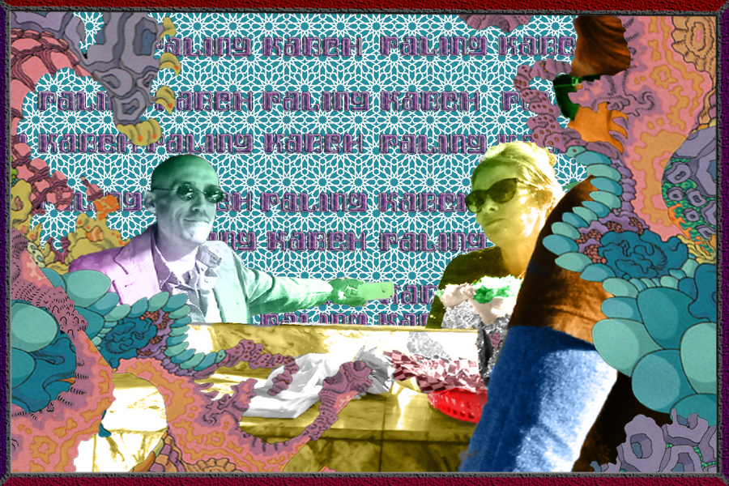

Home | Pixels | Vectors | Motion | Layout | Contact

Many times I find looking at pictures and feeling so far removed from the moment the photograph was taken. By adding images of other worlds, either from an imagined outer space landscape to Islamic patterning and Javanese script, I can connect back to a moment. This photo was taken when I was preparing to go to Indonesia, the world’s largest Muslim country, while at the same time reading Silver Surfer comics.